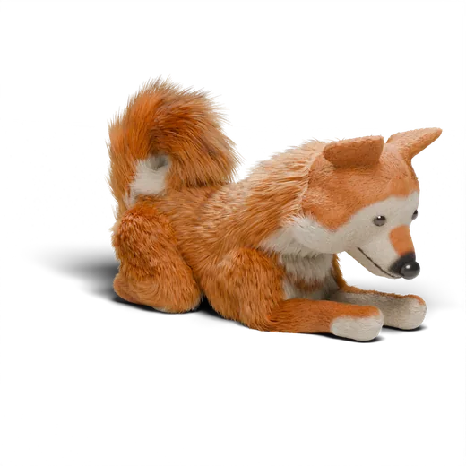
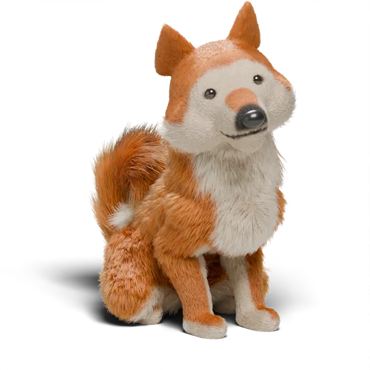

La prima notte del cucciolo: trasportino, pianto e sonno
La prima notte il cucciolo ha appena lasciato la mamma e i fratelli. L'obiettivo non è l'indipendenza: è sentirsi abbastanza al sicuro da dormire.
Metti il trasportino o la cuccia accanto al tuo letto
Abbastanza vicino da sentirti e annusarti. Nelle settimane successive potrai spostarlo fuori dalla stanza.
Di giorno, rendi il trasportino un bel posto
Lascia la porta aperta e lancia dentro dei bocconcini, così entra per scelta. Aggiungi un gioco da masticare sicuro.
Ultima uscita subito prima di dormire
Tranquilla, noiosa, al guinzaglio. Poi dritti a letto.
Se piange: controlla, senza fare festa
Portalo fuori per un'uscita rapida e silenziosa, poi di nuovo a letto. Una mano vicino al trasportino va bene; i giochi no.
Aumenta piano il tempo da solo
Secondi, poi minuti, di giorno. Mai usare il trasportino come punizione.
Un panico che non si calma (bava, tentativi di uscire a forza) richiede un piano più lento e forse un professionista.

Il monitor dell'abbaio di Sitspark ti fa esercitare il tempo da solo e vedere per quanto è rimasto tranquillo. La prima classe e la prima lezione di ogni classe sono gratuite, senza account.
Scarica dall'App Store